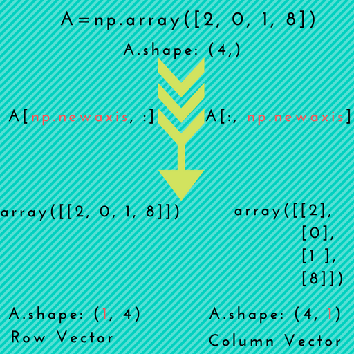

scikit-learn (sklearn) 学习¶
学习目标：使用sklearn库进行各种算法实战，并且用可视化技术润色 学习任务参见：https://github.com/datawhalechina/team-learning
使用git clone 克隆项目Tips：
为了保证一个项目的完整性，github不允许clone单个文件，必须克隆整个仓库
可以使用镜像加快下载速度
原来链接是这个，https://github.com/datawhalechina/machine-learning-toy-code.git 在github.com后面加上.cnpmjs.org就行 :git clone https://github.com.cnpmjs.org/datawhalechina/machine-learning-toy-code.git
可以安装加速器，加速下载速度 github 加速器
线性回归与逻辑回归¶
np.newaxis : it is used to increase the dimension of the existing array.
plt.legend():可以设置图例（就是每个线条或者点表示什么的解释框）的属性
多项式回归的思路一般是将\(m\)次多项式方程转化为\(m\)线性回归方程，即将\(y=b_0+b_1*x+...+b_m*x^m\)转换为\(y=b_0*+b_1*x_1+...+b_m*x_m\)（令\(x_m=x^m\)即可），然后使用线性回归的方法求出相应的参数。
Linear regression¶
Dataset $D={(x_1,y_1),(x_2,y_2),…,(x_m,y_m)}, x_i=(x_(i1),x_(i2),…,x_(id)), {y_i} \in {\mathbb {R}} $
2_case1. 最简单的情况：输入属性的数目只有一个 西瓜书 公式3.7 + 3.8
2_case2. 输入属性的数目有d个 西瓜书 公式3.11
in R.
[15]:
import numpy as np
import matplotlib.pyplot as plt
def true_fun(X): # 这是我们设定的真实函数，即ground truth的模型
return 1.5*X + 0.2
np.random.seed(0) # 设置随机种子
n_samples = 30 # 设置采样数据点的个数
'''生成随机数据作为训练集，并且加一些噪声'''
X_train = np.sort(np.random.rand(n_samples))
y_train = (true_fun(X_train) + np.random.randn(n_samples) * 0.05).reshape(n_samples,1)
print(X_train.shape)
print(y_train.shape)
# 定义模型
from sklearn.linear_model import LinearRegression # 导入线性回归模型
model = LinearRegression() # 定义模型
model.fit(X_train[:,np.newaxis], y_train) # 训练模型
print("输出参数w：",model.coef_) # 输出模型参数w
print("输出参数b：",model.intercept_) # 输出参数b
X_test = np.linspace(0, 1, 100)
plt.plot(X_test, model.predict(X_test[:, np.newaxis]), label="Model")
plt.plot(X_test, true_fun(X_test), label="True function")
plt.scatter(X_train,y_train) # 画出训练集的点
plt.legend(loc="best")
plt.show()
# 多项式回归
import numpy as np
import matplotlib.pyplot as plt
from sklearn.pipeline import Pipeline
from sklearn.preprocessing import PolynomialFeatures # 导入能够计算多项式特征的类
from sklearn.linear_model import LinearRegression
from sklearn.model_selection import cross_val_score
def true_fun(X): # 这是我们设定的真实函数，即ground truth的模型
return np.cos(1.5 * np.pi * X)
np.random.seed(0)
n_samples = 30 # 设置随机种子
X = np.sort(np.random.rand(n_samples))
y = true_fun(X) + np.random.randn(n_samples) * 0.1
degrees = [1, 4, 15] # 多项式最高次
plt.figure(figsize=(14, 5))
for i in range(len(degrees)):
ax = plt.subplot(1, len(degrees), i + 1)
plt.setp(ax, xticks=(), yticks=())
polynomial_features = PolynomialFeatures(degree=degrees[i],
include_bias=False)
linear_regression = LinearRegression()
pipeline = Pipeline([("polynomial_features", polynomial_features),
("linear_regression", linear_regression)]) # 使用pipline串联模型
pipeline.fit(X[:, np.newaxis], y)
scores = cross_val_score(pipeline, X[:, np.newaxis], y,scoring="neg_mean_squared_error", cv=10) # 使用交叉验证
X_test = np.linspace(0, 1, 100)
plt.plot(X_test, pipeline.predict(X_test[:, np.newaxis]), label="Model")
plt.plot(X_test, true_fun(X_test), label="True function")
plt.scatter(X, y, edgecolor='b', s=20, label="Samples")
plt.xlabel("x")
plt.ylabel("y")
plt.xlim((0, 1))
plt.ylim((-2, 2))
plt.legend(loc="best")
plt.title("Degree {}\nMSE = {:.2e}(+/- {:.2e})".format(
degrees[i], -scores.mean(), scores.std()))
plt.show()
(30,)
(30, 1)
输出参数w： [[1.4474774]]
输出参数b： [0.22557542]